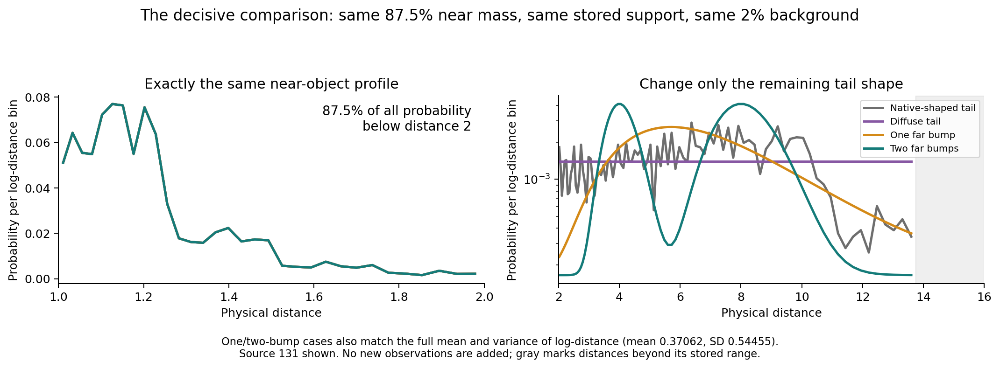
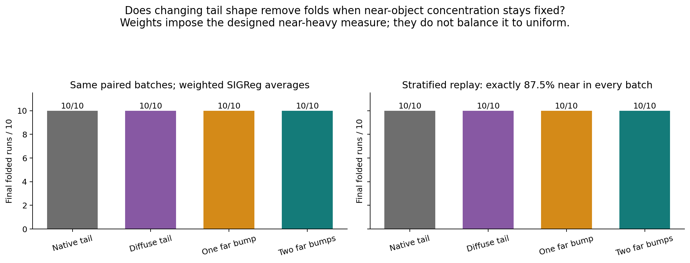
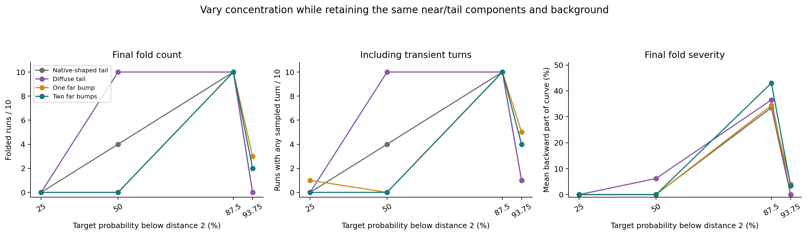
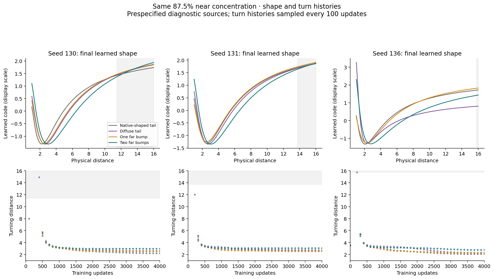
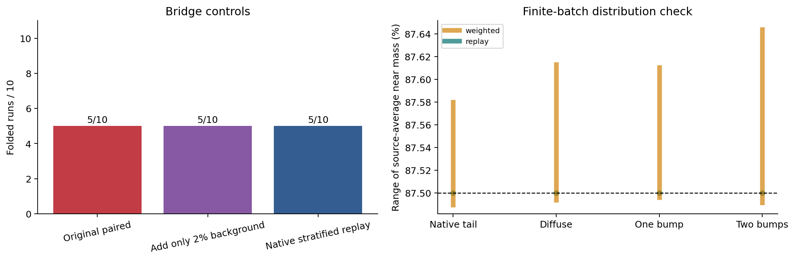
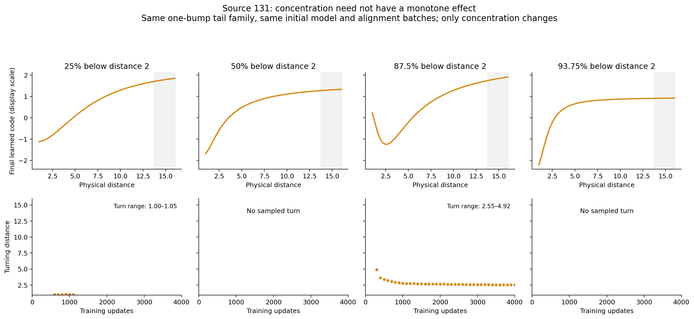
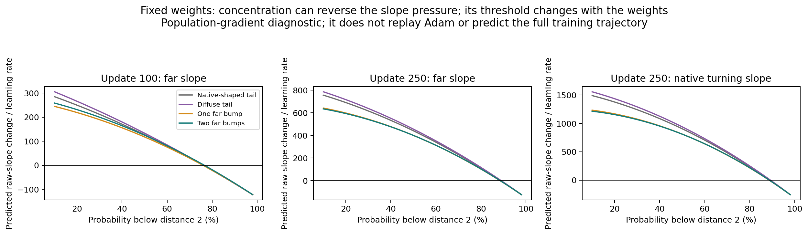

Concentration-matched folding comparison
Explanation · Numerical tables
matched distributions

decisive outcomes

concentration dose response

curves and turn histories

bridge and estimator checks

one source concentration histories

local slope force
